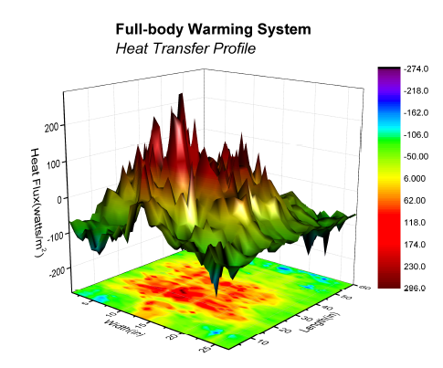
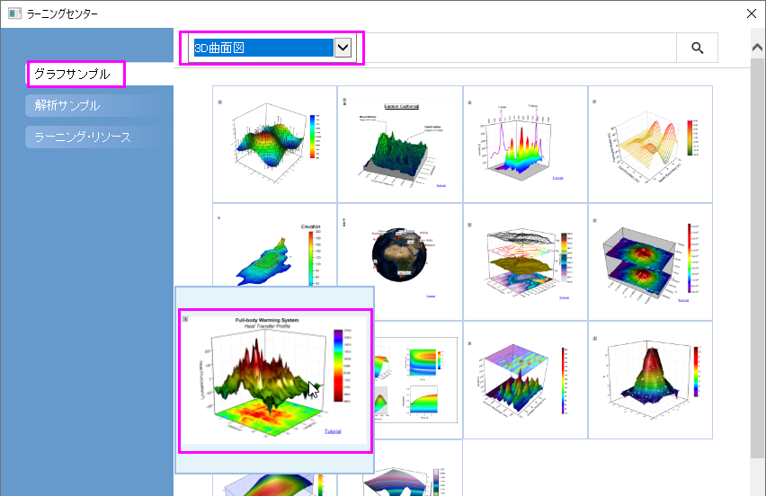
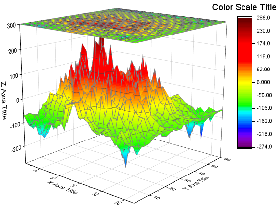
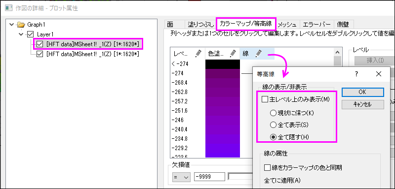
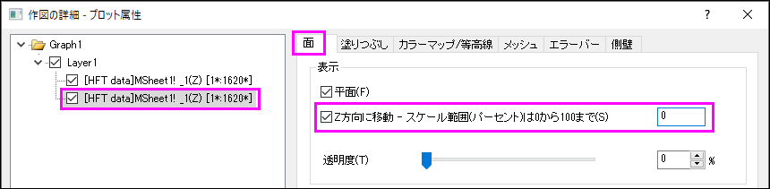
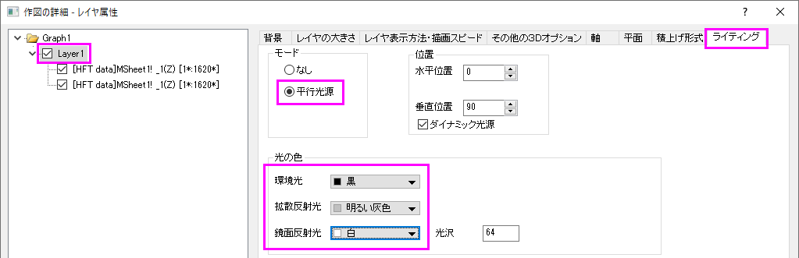

カラーマップ曲面図
3D-Colormap-Surface
サマリー
このチュートリアルは、3Dカラーマップ曲面を作成する方法を示しています。
- 
学習する項目
このチュートリアルでは、以下の項目について説明します。
- 3Dカラーマップ曲面図を作成する
- 3D曲面図を編集する
ステップ
- メニューからヘルプ：ラーニングセンターを選択して、ラーニングセンターダイアログを開きます。ダイアログの左パネルからグラフサンプル
を選択し、サンプルのドロップダウンリストから3D曲面図 を選択します。サムネイル画像をダブルクリックし、3D
Surface Plots - Surface Graph profiling Differences in Body Heat Transferを開きます。

このチュートリアルは、 グラフギャラリーのページ と関連しています。
- HFT data行列を選択し、作図： 3D：投影付きの3Dカラーマップ曲面と選択して3Dグラフを作成します。

- フォーマット：作図の詳細（プロット属性）を選択し、作図の詳細ダイアログのプロットレベルに行きます。
- 曲面図を選択してメッシュタブを開き、有効にするチェックを外すしてメッシュを消します。カラーマップ/等高線タブで、線ヘッダをクリックして、等高線ダイアログを開きます。主レベル上のみ表示のチェックを外し、全て隠すを選んで、全等高線を非表示にします。

- 左側パネルで投影図を選択し、面タブを開きます。次の図が示すように0を入力し、投影図をグラフの下に表示します。

- メッシュタブを開き、有効にするチェックを外してメッシュ線を非表示にします。カラーマップ/等高線タブを開き、ステップ4と同じように等高線を消します。
- 左側パネルのLayer1をクリックしてから、右側パネルでライティングタブを開きます。次の画像のように設定を変更してライト効果を有効にします。

そしてOKボタンをクリックして、ダイアログを閉じます。
- 最後に、軸タイトルを変更し、グラフタイトルを次のように追加します。